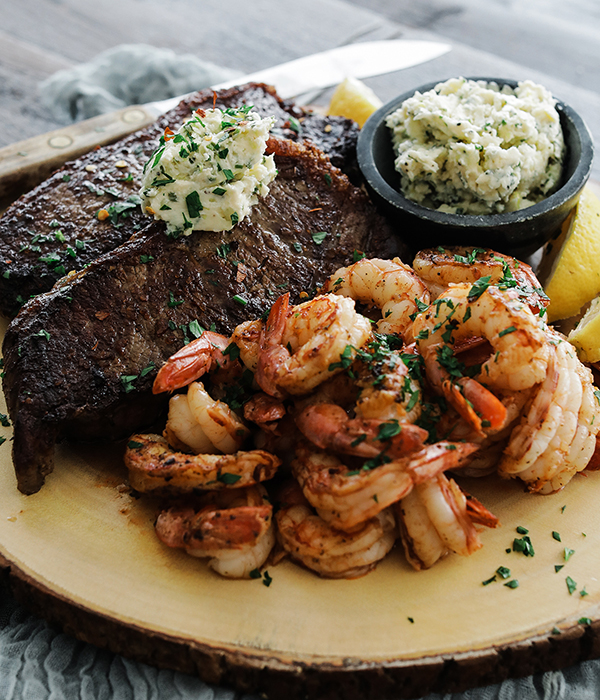
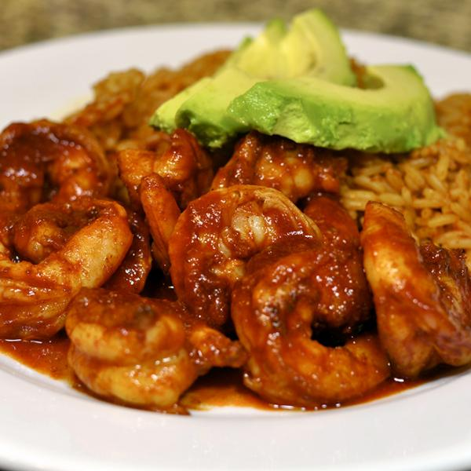

San Luis Restaurant
Located at 1503 W Gate City Blvd in Greensboro, NC, San Luis Restaurant is a go-to spot for authentic Mexican cuisine and delightful desserts. Whether you're craving a hearty plate of Arroz con Pollo, a crispy and indulgent Fried Ice Cream, or a classic Flan, this restaurant delivers bold flavors and satisfying portions. Open seven days a week from 11:00 AM to 10:00 PM, it's the perfect place for a casual lunch or a flavorful dinner. Although they don’t currently offer promotions, the delicious food speaks for itself!
Recommended Dishes

